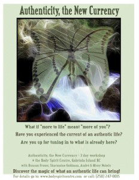

Authenticity as The New Currency

The focus of this workshop will be to liberate the power and potential of the individual within the whole. It is an invitation for the participants to experience their authenticity.We will be connecting with our subtle energies and unique rhythms, playing with intuition and developing trust in inspired action, which will help move us from the small me to the Big WE.
If you feel trapped by job or money issues, this may be a calling for you to set yourself free, on a new life adventure, to find out where you are needed and why you are here.
And if you are on purpose already, these methods can amplify and connect you more deeply to the perfection of the divine river of creation.
This is about taking responsibility for the quality of your life and stepping in to the synchronicity of being connected to trust, passion and abundance.
All this equals a whole lot of Joy and Fun!
~Acceptance of what is, and the path through.~
This is a path of being present to what is, what is up for you, and being honest with yourself. It is about taking risks when you are called to do so.
This is a commitment to listening deeper and acting on the gut feelings, following hunches and discovering the power in oneness.
We will be recording your words for you alone, and all of the “performance Sunday night happening”, to take home on a CD for anchoring this deep experience.
Every aspect of this workshop is designed to encourage the authentic you to emerge; aspects included are:
* Manifesting with and through spirit connection
* Creation of a personal collage based on chakras
* Authentic movement moving freely & living deeply
* Presenting yourself while standing forth in the spotlight
* Open dialog about living authentically in today’s world
* An in-depth look at the investments you are making and would like to make in your life.
* The “happening ~ performance” where all are encouraged to express through music sound and rhythm.
We will not give you any answers or fool proof methods. The unearthing and experience of one’s authenticity is a unique journey. What we can and will provide is a safe container for experiencing yourself in new ways, discovering subtle profound abilities and we will provide a reflection for a new way of being and creating your reality.
The investment for the weekend is $250 (no meals) Accom. extra
Date To Be Announced